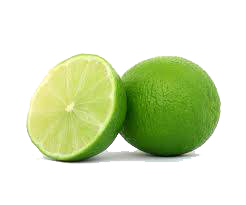
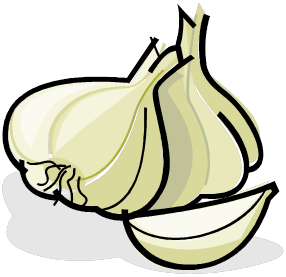
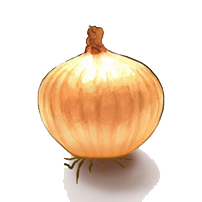
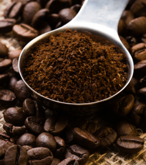

- Lime
- Garlic
- Onion
- Coffee Grounds
Lime (Citrus aurantifolia)
- Lime was chosen as people claim online that it is an anti-bacterial food.
- Lime contains unique flavonoid compounds
- It has been found to be protective against the transmission of cholera, and to be effective against yeast
- Once a study was conducted, where lime was used to treat water in a sewage plant. The outcome: average amount of viruses and bacteria in waste water had drastic drops of up to 96%
- Lime is known to be an essential ingredient in the preparation of most herbal concoctions. It is also used to suppress stomach ache.
- Its antimicrobial activities have also been described as various parts of the plant were found effective against gram-positive and gram-negative bacteria.
Information Source: W.O.K Grabow, Nerrie C. Basson , 1997. National Institute for Water Research of the Council of Scientific and Industrial Research
Garlic (Allium sativum)
- Contains a disulfide, Ajeone, prevents infections with yeast Candida albicans
- Crushed garlics prevent infection of Pseudomonas aeruginosa in burn patients
- Garlic extract, (Allicin) was once tested on carrot seeds infested with Alternaria. For the control, 12/100 seeds grew. For the samples treated with Allicin, 47/100 seeds grew.
- Garlic has been reported to help prevent heart disease including atherosclerosis, as well as high blood pressure and cancer
- It has also been reasonably, successfully used in AIDS patients to treat Cryptosporidium infections in an uncontrolled study in China
Information Source: The world, 2011, 1 1
Information Source: Alan.J.Sulsarenko, Anant Patel, Daniela Portz, 2007, 27th September
Online Website: www.whfoods.com
Onion (Allium cepa)
- Onion extracts are found to have high antioxidant capacity.
- Onions rank in the top 10 of commonly eaten vegetables in their quercetin content.
- Quercetin was extracted from the onions and separately added to cultures of Bacillus Cereus, Staphylococcus Aureus, M. Luteus
- Quercetin had an inhibitory effect on all the strains of bacteria that were studied.
Information Source: Jonathan Santas; María Pilar Almajano; The University of Barcelona, Spain, 2010. The International Journal of Food Science and Technology
Coffee grounds (Caffeine) (1,3,7-trimethylxanthine)
- Results revealed that the addition of caffeine inhibited the growth of E. coli O157:H7, and thus indicating that caffeine has potential as an antimicrobial agent for the treatment of E. coli O157:H7
- Coffee Grounds was more effective at inhibiting bacterial strains than was the antibiotic ampicillin.
- Coffee grounds has been tested for antibacterial effects on staphylococcus, enterobacter, salmonella and E. coli.
- Caffiene has been show to be successful when combating E.coli and Ps.fluorescens, in a study conducted by the laboratory of ecological immunology.
Online Website: www.livestrong.com